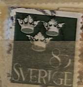
| SOURCE | TITLE| IMAGE MATCH | click to source page |
| www.ebay.com | Retired Sid Dickens T-59 Princess Memory Block Silver Crown ... | 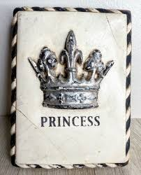 |
| www.ebay.com | D5992: 1909 Stockholm, Sweden Advertising Poster Stamp | eBay | 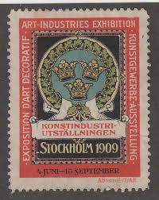 |
| findyourstampsvalue.com | Three Crowns 80o Olive green stamp price, value | 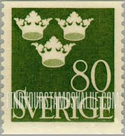 |
| www.chinadaily.com.cn | Sweden's Crown Princess Victoria and her fiance wedding ... | 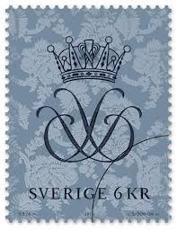 |
| findyourstampsvalue.com | Three Crowns 2.80k Red stamp price, value | 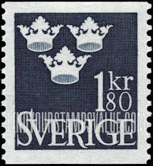 |
| www.jaysmith.com | Jay Smith & Associates: Sweden: Specialized Stamps: 1939 ... | 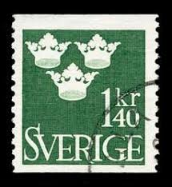 |
| www.istockphoto.com | Three Crowns On Old Sweden Postage Stamp Stock Photo ... | 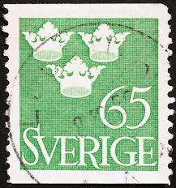 |
| www.ebay.com | Sweden Stamp 660 - 3 Crowns | eBay | 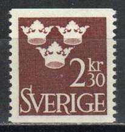 |
| www.etsy.com | PARIS Chalkboard Look Crown Block Sign,shabby Chic Decor ... | 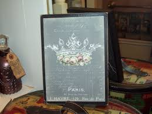 |
| pixels.com | Sverige Sweden Swedish Tre Kronor Three Crowns Distressed ... | 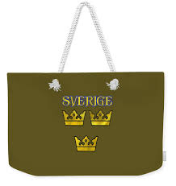 |
| www.ebid.net | SWEDEN, Three Crowns, olive green 1948, 80ore on eBid United ... | 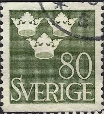 |
| www.abebooks.com | Shvetsiya ? strana issledovaniy i promyshlennosti (Sweden ... | 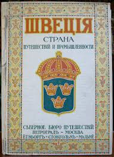 |
| www.dreamstime.com | Postage Stamp Printed in Sweden Shows Three Crowns, Serie ... | 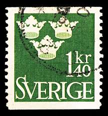 |
| www.stampedia.net | スウェーデン 1948年 1.4 krona 通常切手, 1939-1949年シリーズ ... | 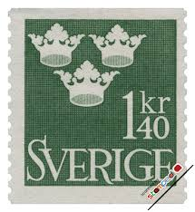 |
| www.ebay.com | SWEDEN #657 1964 1.80k THREE CROWNS MINT VF NH O.G | eBay | 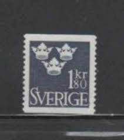 |
| www.lastdodo.com | 1939 Three crowns Stamp catalogue - LastDodo | 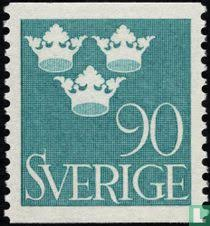 |
| www.istockphoto.com | Sweden Postage Stamps Stock Photo - Download Image Now ... | 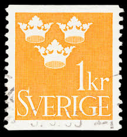 |
| vividagallery.com | Sweden Three Crowns National Emblem Royal Symbol Heraldic ... | 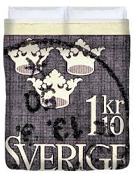 |
| www.hipstamp.com | Sweden 1939 Early Issue Fine Used 85ore. NW-218288 | Europe ... | 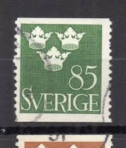 |
| www.alamy.com | SWEDEN - CIRCA 1939: stamp printed by Sweden, shows ... | 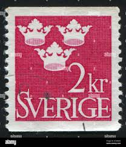 |
| commons.wikimedia.org | File:Konstindustriutst 1909 katalog.jpg - Wikimedia Commons | 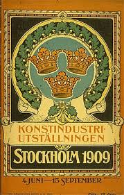 |
| www.theprettycult.com | The Pretty Cult - 'The Summoning' Medieval Crown Earrings ... | 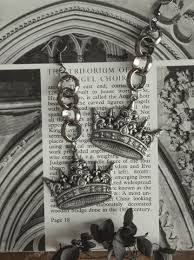 |
| www.freestampcatalogue.com | Stamps from Sweden - Freestampcatalogue.com - The free ... | 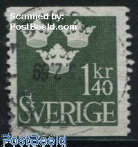 |
| mises.org | Conceived in Disgrace: The 350th Anniversary of the Creation ... | 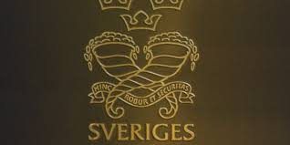 |
| www.hipstamp.com | Sweden 1964 - Scott 664 used - 3 kr, Three Crowns | Europe ... | 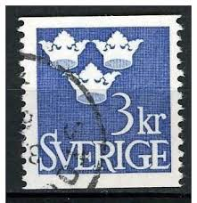 |
| www.athome.com | King Crown Glass Framed Wall Art | At Home | 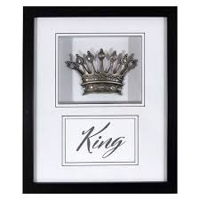 |
| findyourstampsvalue.com | Value of sverige 50 ore stamps | 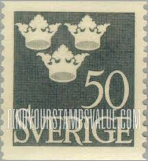 |
| siddickens.com | Prince - Eternal Renewal of the Seasons Collection | 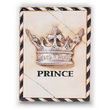 |
| www.paulfrasercollectibles.com | Earliest design for the World Record priced Treskilling ... | 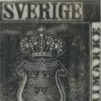 |
| www.ebay.com | No: 73213 - SWEDEN - "3 CROWNS" - AN OLD 1.75 ÖRE STAMP ... | 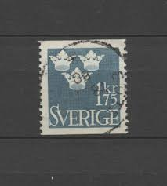 |
| www.stampedia.net | SWEDEN 1965 Commemorative Stamps 2.85 krona, | Three Crowns | 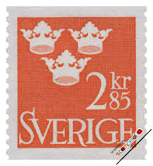 |
| www.hipstamp.com | Sweden Sc#395 Used, 80o olive grn, Three Crowns (1948 ... | 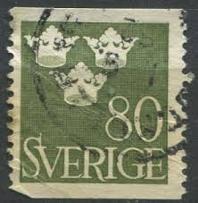 |
| www.valentinschubert.com | A Model of High Risk Premia Stagnation | Valentin Schubert | 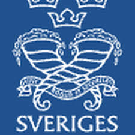 |
| www.etsy.com | This item is unavailable - Etsy | 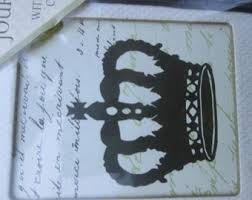 |
| www.alamy.com | SWEDEN - CIRCA 1939: stamp printed by Sweden, shows Three ... | 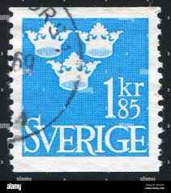 |
| www.redbubble.com | Three Crowns Tre Kronor of Sweden Swedish Coat of Arms ... | 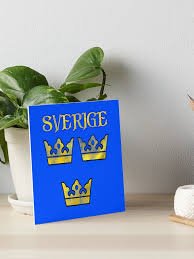 |
| www.shutterstock.com | Sweden Circa 1970 Stamp Printed Sweden Stock Photo 725498395 ... | 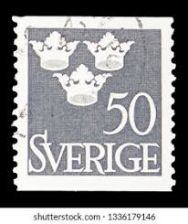 |
| www.rightscon.org | RightsCon Summit Series | 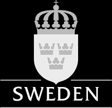 |
| www.ebay.com | Stamp Europe Sweden 1952 Three Crowns 50o sc439 and 2k sc441 ... | 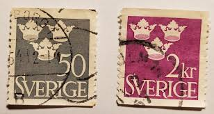 |
| auctionet.com | STAMP ALBUM, 3 pcs, blue covers, series Estet - Swedish ... | 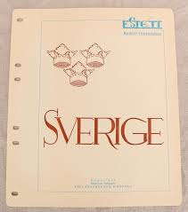 |
| www.dreamstime.com | 702 Stamp Swedish Stock Photos - Free & Royalty-Free Stock ... | 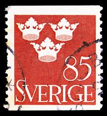 |
| digitaltmuseum.org | Sjööblom, Lars (1956 - ) - DigitaltMuseum | 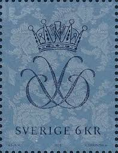 |
| siddickens.com | T578 - Queen Elizabeth II | 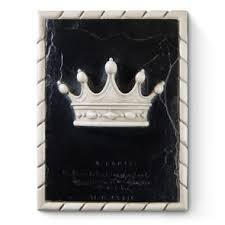 |
| pixels.com | Sverige Sweden Swedish Tre Kronor Three Crowns Distressed ... | 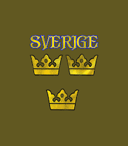 |
| jubileegiftshop.com | Crown Wall Décor White with Silver Embossed | Jubilee Gift Shop | 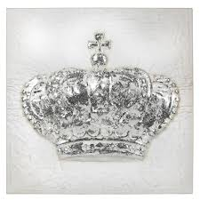 |
| www.melray.com | International Coatings 96LF Metallic Silver Plastisol Ink | 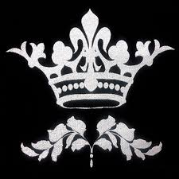 |
| www.catholictothemax.com | Marian Symbol Outdoor Garden Flag - Catholic to the Max ... | 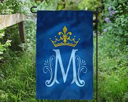 |
| siddickens.com | Queen (Silver) - 1998 Collection | 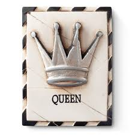 |
| www.sydsvenskan.se | Företag förvånas av konjunkturen – Sydsvenskan | 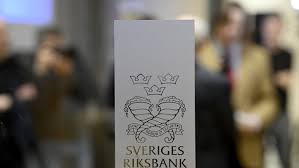 |
| auctionet.com | CHAMPAGNE COOLER & ICE BUCKET, Scandia Silver, Scandia ... | |
| www.redbubble.com | Three Crowns, the Coat of Arms of Sweden, Black Print ... | |
| www.instagram.com | A tour of Strawberry Hill House union with ... | |
| www.etsy.com | French Wine Sign, CHATEAU BEAULIEU, Raised Crown, Bordeaux ... | |
| www.pinterest.com | Sid Dickens PQ 'Crown' | |
| www.reddit.com | The Scandinavia monarchies in pictures : r/monarchism | |
| www.styldlifecrownclub.com | Our Story | Meet the Crown Club Contributors — SL Crown Club | |
| www.leboncoin.fr | SUEDE timbre N°267 oblitéré - Collection | |
| www.cincinnati.com | The fight to preserve King Records' legacy | |
| www.dreamstime.com | Postage Stamp Printed in Sweden Shows Three Crowns, Serie ... |
{kind=link}